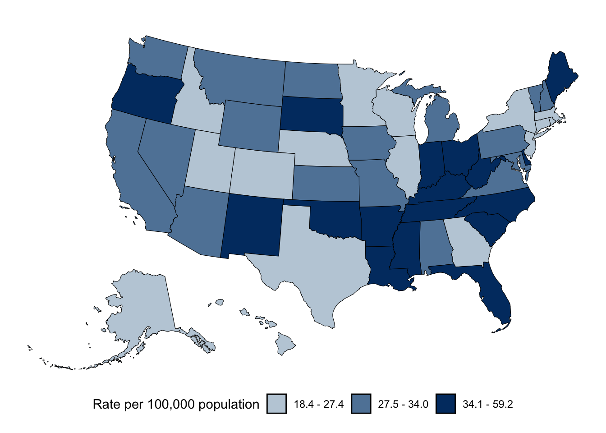
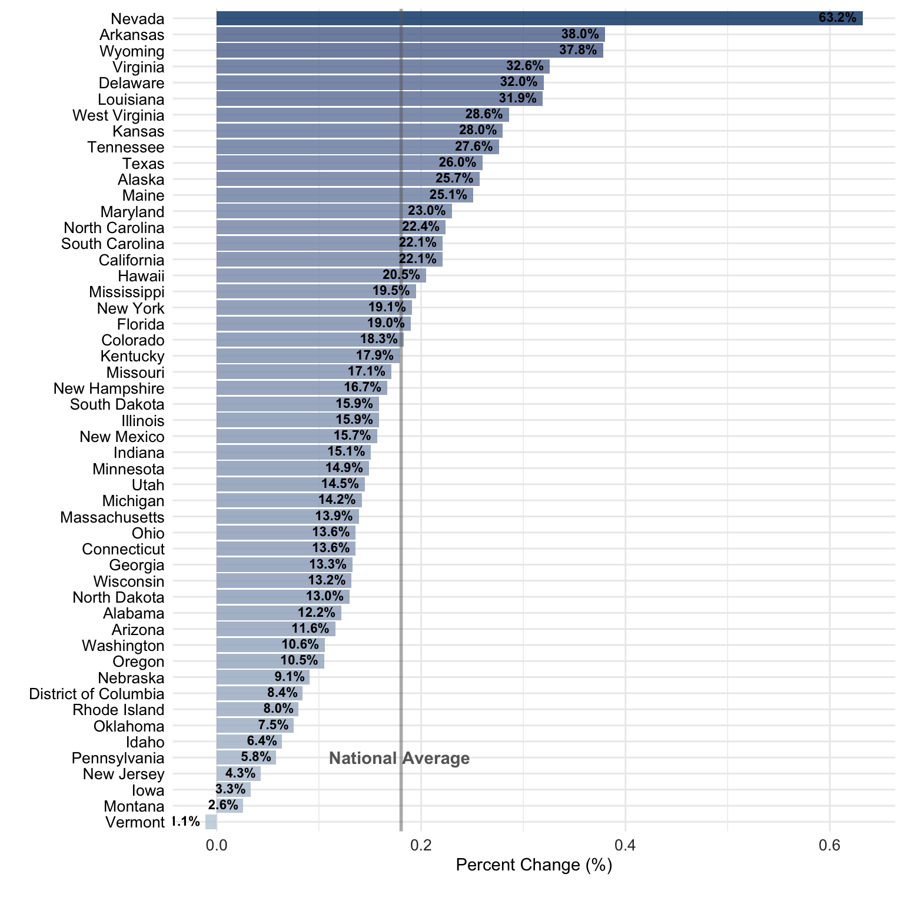
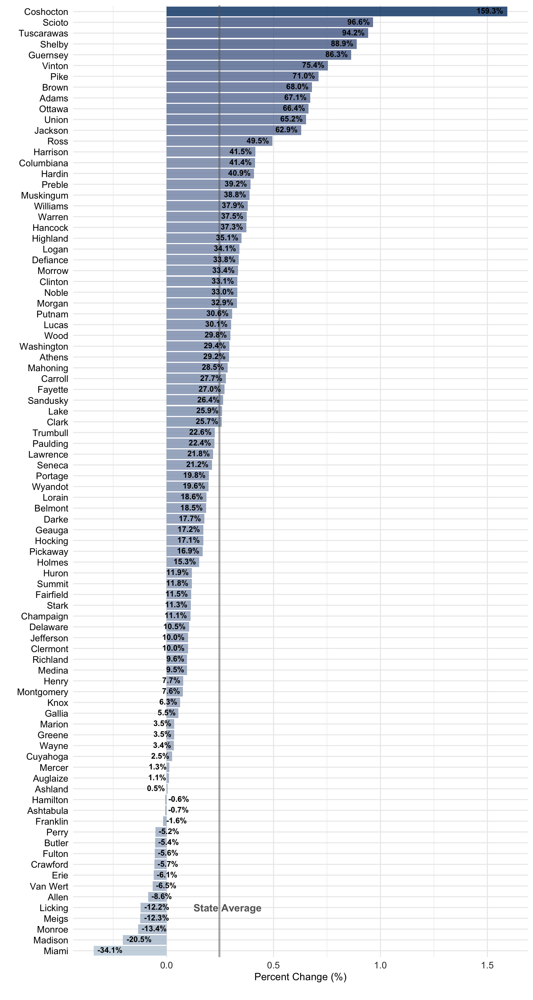

Background
The OHIO Alliance for Population Health (OAPH) is a statewide collaborative focused on improving the health of all Ohioans by solving the most complex and pressing population health concerns across the state. In line with OAPH’s overarching mission, this report aims to identify disparities in diabetes mortality among Ohioans and consider how these disparities can be addressed to improve health and well-being across the state.
Key Findings
West Virginia had the highest diabetes mortality rate of any state in 2022 with 59.2 deaths per 100,000 population, 94.1% higher than the national average.
Ohio ranked 41st (out of 51 states, with rank 1 indicating the lowest rate) in diabetes mortality in 2022 with a reported rate of 36.2 deaths per 100,000 population, 18.7% higher than the national average.
Nevada saw the largest increase in diabetes mortality (63.2%) between 2013-2017 and 2018-2022.
Vermont is the only state that saw a decrease in diabetes deaths (-1.1%) between 2013-2017 and 2018-2022.
Coshocton County saw the largest increase in diabetes mortality in Ohio (159.3%) between 2013-2017 and 2018-2022.
There were 15 counties in Ohio that saw a decrease in diabetes mortality between 2013-2017 and 2018-2022., with Miami, Madison, Monroe, Meigs, and Licking Counties experiencing the highest reductions.
In 2018-2022 Southeast Ohio had the highest diabetes mortality rate in the state with 55.5 deaths per 100,000 population, 82% higher than the state average.
In 2018-2022 Central Ohio had the lowest diabetes death rate in the state with 27.1 deaths per 100,000 population, 11.1% lower than the state average.
In 2018-2022 Delaware County had the lowest diabetes death rate in Ohio and ranked 56th (out of 2,824) in diabetes mortality among all United States counties with a rate of 13.8 deaths per 100,000 population.
In 2018-2022 Vinton County had the highest diabetes death rate in Ohio and ranked 2,743rd (out of 2,824) in diabetes mortality among all United States counties with a rate of 88.3 deaths per 100,000 population.
Methodology
This report examines diabetes mellitus deaths across national, state, and local levels over an extended period of time.
CDC WONDER collects and maintains data regarding deaths and their causes. All data were extracted from CDC WONDER using provisional1 or final mortality data2.
All maps, graphs, and other figures for the United States and Ohio that are presented in this report were produced using R3, RStudio4, ggplot25, sf6 7, tidyverse8, and tidycensus9.
Discussion
Diabetes was the eight-leading cause of death in the United States last year (2022), killing more than 100,000 Americans. This chronic health condition is characterized by high blood sugar (hyperglycemia) and caused by reduced amounts of insulin produced by the pancreas or the body not responding properly to the effects of insulin10. Despite all forms of diabetes being manageable with lifestyle changes and/or medications, death rates continue to rise in the United States due to sedentary lifestyles, unhealthy diets, and an aging population11. In the past decade the United States saw a 27.6% increase in diabetes mortality with only one state, Vermont, seeing death rates fall during the past five years.
Similarly, Ohio experienced a roughly 18% increase in diabetes mortality over the past decade and ranked 41 out of 51 states in 2022 with a reported rate (36.2 deaths per 100,000 population) 19% higher than the national average. However, not all Ohioans are at equal risk of dying from diabetes. Nine out of ten counties with the highest mortality rates in Ohio are located in Appalachia, and residents of rural Appalachian counties are 1.7 times as likely to die from diabetes than their suburban counterparts.
Conclusion
Diabetes is a serious condition that can affect a person’s heart, blood vessels, nerves, eyes, and kidneys. It will be the next major epidemic we face as a society and we know that rates of diabetes are much higher in southeast Ohio than other parts of the state and country. Findings from this report draw attention to the disparities that rural Appalachians face on a daily basis and existing inequalities will only accelerate the diabetes crisis that ultimately influences health outcomes and mortality. Depicting diabetes deaths by subregions in Ohio emphasizes the critical need to facilitate collaborations on the local, regional, state, and national level to improve diabetes care and address barriers that contribute to these high mortality rates.
United States
Map 1: Diabetes Deaths by State, 2022
Figure 1: Diabetes Deaths by State, 2022

Map 2: Diabetes Deaths by State, 2018-2022

Map 3: Diabetes Deaths by State, 2013-2017

Figure 2: Diabetes Deaths by State, Percent Change from 2013-2017 to 2018-2022

Ohio
Map 4: Diabetes Deaths by County, 2018-2022

Figure 3: Diabetes Deaths by County, 2018-2022

Map 5: Diabetes Deaths by County, 2013-2017

Figure 4: Diabetes Deaths by County, Percent Change from 2013-2017 to 2018-2022

Map 6: Diabetes Deaths by Subregion, 2018-2022

Figure 5: Diabetes Deaths by County Type, 20182-2022

Tables
Table 1: Diabetes Deaths by State, 2022
| State | Deaths | Population | Death Rate | State Rank |
|---|---|---|---|---|
| West Virginia | 1,056 | 1,782,959 | 59.2 | 51 |
| Arkansas | 1,397 | 3,025,891 | 46.2 | 50 |
| Maine | 603 | 1,372,247 | 43.9 | 49 |
| Mississippi | 1,256 | 2,949,965 | 42.6 | 48 |
| New Mexico | 859 | 2,115,877 | 40.6 | 47 |
| Oklahoma | 1,586 | 3,986,639 | 39.8 | 46 |
| Tennessee | 2,722 | 6,975,218 | 39.0 | 45 |
| South Dakota | 339 | 895,376 | 37.9 | 44 |
| Kentucky | 1,668 | 4,509,394 | 37.0 | 43 |
| Indiana | 2,493 | 6,805,985 | 36.6 | 42 |
| Ohio | 4,267 | 11,780,017 | 36.2 | 41 |
| Delaware | 361 | 1,003,384 | 36.0 | 40 |
| Louisiana | 1,653 | 4,624,047 | 35.7 | 39 |
| North Carolina | 3,721 | 10,551,162 | 35.3 | 38 |
| Florida | 7,549 | 21,781,128 | 34.7 | 37 |
| South Carolina | 1,783 | 5,190,705 | 34.3 | 36 |
| Oregon | 1,456 | 4,246,155 | 34.3 | 35 |
| Michigan | 3,419 | 10,050,811 | 34.0 | 34 |
| Arizona | 2,423 | 7,276,316 | 33.3 | 33 |
| Virginia | 2,875 | 8,642,274 | 33.3 | 32 |
| Kansas | 963 | 2,934,582 | 32.8 | 31 |
| New Hampshire | 454 | 1,388,992 | 32.7 | 30 |
| Alabama | 1,645 | 5,039,877 | 32.6 | 29 |
| Pennsylvania | 4,124 | 12,964,056 | 31.8 | 28 |
| Iowa | 1,009 | 3,193,079 | 31.6 | 27 |
| Wyoming | 180 | 578,803 | 31.1 | 26 |
| Missouri | 1,878 | 6,168,187 | 30.4 | 25 |
| North Dakota | 234 | 774,948 | 30.2 | 24 |
| Montana | 329 | 1,104,271 | 29.8 | 23 |
| California | 11,615 | 39,237,836 | 29.6 | 22 |
| Maryland | 1,795 | 6,165,129 | 29.1 | 21 |
| Nevada | 898 | 3,143,991 | 28.6 | 20 |
| Washington | 2,198 | 7,738,692 | 28.4 | 19 |
| Vermont | 179 | 645,570 | 27.7 | 18 |
| Nebraska | 539 | 1,963,692 | 27.4 | 17 |
| Illinois | 3,463 | 12,671,469 | 27.3 | 16 |
| Rhode Island | 293 | 1,095,610 | 26.7 | 15 |
| Texas | 7,851 | 29,527,941 | 26.6 | 14 |
| Minnesota | 1,514 | 5,707,390 | 26.5 | 13 |
| Wisconsin | 1,489 | 5,895,908 | 25.3 | 12 |
| Hawaii | 363 | 1,441,553 | 25.2 | 11 |
| Alaska | 184 | 732,673 | 25.1 | 10 |
| Georgia | 2,691 | 10,799,566 | 24.9 | 9 |
| Idaho | 473 | 1,900,923 | 24.9 | 8 |
| New York | 4,786 | 19,835,913 | 24.1 | 7 |
| Utah | 763 | 3,337,975 | 22.9 | 6 |
| New Jersey | 2,099 | 9,267,130 | 22.6 | 5 |
| Massachusetts | 1,503 | 6,984,723 | 21.5 | 4 |
| Colorado | 1,214 | 5,812,069 | 20.9 | 3 |
| Connecticut | 746 | 3,605,597 | 20.7 | 2 |
| District of Columbia | 123 | 670,050 | 18.4 | 1 |
Table 2: Ohio Diabetes Deaths by County, 2018-2022
| State | Deaths | Population | Death Rate | Ohio Rank | National Rank |
|---|---|---|---|---|---|
| Vinton | 57 | 64,588 | 88.3 | 88 | 2,744 |
| Tuscarawas | 404 | 460,939 | 87.6 | 87 | 2,740 |
| Jackson | 120 | 162,312 | 73.9 | 86 | 2,646 |
| Scioto | 272 | 371,855 | 73.1 | 85 | 2,639 |
| Belmont | 242 | 332,141 | 72.9 | 84 | 2,633 |
| Coshocton | 127 | 182,914 | 69.4 | 83 | 2,596 |
| Williams | 124 | 183,493 | 67.6 | 82 | 2,560 |
| Morgan | 47 | 70,781 | 66.4 | 81 | 2,542 |
| Harrison | 49 | 74,182 | 66.1 | 80 | 2,537 |
| Lawrence | 187 | 293,310 | 63.8 | 79 | 2,507 |
| Ross | 239 | 383,799 | 62.3 | 78 | 2,470 |
| Guernsey | 119 | 193,250 | 61.6 | 77 | 2,453 |
| Jefferson | 195 | 325,609 | 59.9 | 76 | 2,419 |
| Carroll | 80 | 134,274 | 59.6 | 75 | 2,412 |
| Washington | 175 | 298,564 | 58.6 | 74 | 2,389 |
| Shelby | 140 | 241,508 | 58.0 | 73 | 2,371 |
| Paulding | 52 | 93,822 | 55.4 | 72 | 2,294 |
| Crawford | 114 | 207,890 | 54.8 | 71 | 2,278 |
| Clark | 367 | 673,527 | 54.5 | 70 | 2,268 |
| Monroe | 36 | 67,688 | 53.2 | 69 | 2,237 |
| Columbiana | 261 | 508,286 | 51.3 | 68 | 2,165 |
| Sandusky | 149 | 293,098 | 50.8 | 67 | 2,147 |
| Marion | 165 | 325,751 | 50.7 | 66 | 2,139 |
| Meigs | 57 | 112,789 | 50.5 | 65 | 2,130 |
| Clinton | 104 | 209,954 | 49.5 | 64 | 2,088 |
| Pike | 65 | 137,712 | 47.2 | 63 | 1,994 |
| Mahoning | 526 | 1,137,924 | 46.2 | 62 | 1,956 |
| Noble | 33 | 71,494 | 46.2 | 61 | 1,951 |
| Fayette | 66 | 143,582 | 46.0 | 60 | 1,940 |
| Highland | 99 | 216,231 | 45.8 | 59 | 1,934 |
| Logan | 104 | 228,426 | 45.5 | 58 | 1,917 |
| Defiance | 85 | 190,318 | 44.7 | 57 | 1,867 |
| Trumbull | 444 | 996,071 | 44.6 | 56 | 1,862 |
| Adams | 61 | 138,037 | 44.2 | 55 | 1,844 |
| Wyandot | 48 | 108,834 | 44.1 | 54 | 1,834 |
| Hardin | 68 | 155,556 | 43.7 | 53 | 1,818 |
| Ashtabula | 212 | 485,921 | 43.6 | 52 | 1,811 |
| Brown | 95 | 217,772 | 43.6 | 51 | 1,809 |
| Ottawa | 87 | 201,755 | 43.1 | 50 | 1,776 |
| Preble | 88 | 204,449 | 43.0 | 49 | 1,766 |
| Putnam | 73 | 169,931 | 43.0 | 48 | 1,761 |
| Gallia | 63 | 147,995 | 42.6 | 47 | 1,740 |
| Hocking | 59 | 140,938 | 41.9 | 46 | 1,698 |
| Lucas | 897 | 2,144,923 | 41.8 | 45 | 1,691 |
| Henry | 56 | 136,072 | 41.2 | 44 | 1,664 |
| Van Wert | 58 | 142,179 | 40.8 | 43 | 1,645 |
| Hancock | 153 | 376,432 | 40.6 | 42 | 1,635 |
| Stark | 755 | 1,859,620 | 40.6 | 41 | 1,632 |
| Erie | 151 | 372,304 | 40.6 | 40 | 1,630 |
| Huron | 118 | 291,483 | 40.5 | 39 | 1,626 |
| Muskingum | 170 | 431,234 | 39.4 | 38 | 1,573 |
| Seneca | 108 | 275,135 | 39.3 | 37 | 1,565 |
| Auglaize | 90 | 229,422 | 39.2 | 36 | 1,564 |
| Darke | 100 | 256,835 | 38.9 | 35 | 1,546 |
| Wayne | 226 | 580,791 | 38.9 | 34 | 1,541 |
| Champaign | 74 | 193,997 | 38.1 | 33 | 1,498 |
| Montgomery | 987 | 2,667,308 | 37.0 | 32 | 1,416 |
| Ashland | 98 | 265,223 | 37.0 | 31 | 1,411 |
| Union | 113 | 306,786 | 36.8 | 30 | 1,399 |
| Fulton | 77 | 211,191 | 36.5 | 29 | 1,373 |
| Summit | 980 | 2,697,063 | 36.3 | 28 | 1,363 |
| Morrow | 63 | 176,153 | 35.8 | 27 | 1,339 |
| Knox | 111 | 312,432 | 35.5 | 26 | 1,321 |
| Richland | 217 | 613,534 | 35.4 | 25 | 1,312 |
| Licking | 306 | 891,533 | 34.3 | 24 | 1,241 |
| Portage | 277 | 812,740 | 34.1 | 23 | 1,225 |
| Allen | 169 | 510,334 | 33.1 | 22 | 1,140 |
| Lorain | 511 | 1,562,656 | 32.7 | 21 | 1,114 |
| Madison | 72 | 222,475 | 32.4 | 20 | 1,097 |
| Cuyahoga | 2,000 | 6,205,586 | 32.2 | 19 | 1,085 |
| Mercer | 66 | 208,023 | 31.7 | 18 | 1,047 |
| Fairfield | 248 | 795,193 | 31.2 | 17 | 1,005 |
| Wood | 205 | 657,570 | 31.2 | 16 | 1,004 |
| Lake | 351 | 1,154,278 | 30.4 | 15 | 959 |
| Pickaway | 89 | 293,867 | 30.3 | 14 | 949 |
| Athens | 96 | 320,738 | 29.9 | 13 | 915 |
| Hamilton | 1,224 | 4,104,420 | 29.8 | 12 | 908 |
| Clermont | 287 | 1,038,627 | 27.6 | 11 | 747 |
| Greene | 225 | 843,878 | 26.7 | 10 | 677 |
| Medina | 236 | 905,988 | 26.0 | 9 | 638 |
| Geauga | 120 | 472,081 | 25.4 | 8 | 591 |
| Butler | 489 | 1,931,628 | 25.3 | 7 | 578 |
| Holmes | 51 | 220,398 | 23.1 | 6 | 434 |
| Franklin | 1,514 | 6,594,508 | 23.0 | 5 | 424 |
| Miami | 109 | 539,253 | 20.2 | 4 | 268 |
| Warren | 241 | 1,198,293 | 20.1 | 3 | 263 |
| Perry | 35 | 179,302 | 19.5 | 2 | 243 |
| Delaware | 147 | 1,069,037 | 13.8 | 1 | 57 |
Demographics
Table 3: Diabetes Deaths by Race, 2022
| Race | U.S. Death Rate | Ohio Death Rate |
|---|---|---|
| American Indian/Alaska Native | 30.1 | N/A |
| Asian | 18.5 | 10.5 |
| Black/African American | 40.3 | 42.0 |
| Native Hawaiian/Pacific Islander | 35.8 | N/A |
| White | 30.6 | 37.3 |
| More than one race | 6.5 | N/A |
| Total | 30.5 | 36.2 |
Table 4: Diabetes Deaths by Hispanic Origin, 2022
| Hispanic Origin | U.S. Death Rate | Ohio Death Rate |
|---|---|---|
| Hispanic/Latino | 20.0 | 13.8 |
| Not Hispanic/Latino | 32.8 | 37.2 |
| Total | 30.5 | 36.2 |
| White | 30.6 | 37.3 |
| More than one race | 6.5 | N/A |
| Total | 30.5 | 36.2 |
Table 5: Diabetes Deaths by Sex, 2022
| Sex | U.S. Death Rate | Ohio Death Rate |
|---|---|---|
| Female | 26.0 | 31.4 |
| Male | 35.0 | 41.2 |
| Total | 30.5 | 36.2 |
Table 6: Diabetes Deaths by Age, 2022
| Ten Year Age Group | U.S. Death Rate | Ohio Death Rate |
|---|---|---|
| < 1 year | N/A | N/A |
| 1-4 years | N/A | N/A |
| 5-14 years | 0.1 | N/A |
| 15-24 years | 0.8 | 1.0 |
| 25-34 years | 2.6 | 2.4 |
| 35-44 years | 6.6 | 6.6 |
| 45-54 years | 18.1 | 20.9 |
| 55-64 years | 40.6 | 46.4 |
| 65-74 years | 80.0 | 91.6 |
| 75-84 years | 162.7 | 189.6 |
| 85+ years | 311.6 | 345.6 |
| Total | 30.5 | 36.2 |
References
1. Centers for Disease Control and Prevention (CDC). (n.d.). Multiple Cause of Death (Provisional). CDC WONDER.
2. Multiple Cause of Death Data. (n.d.). In National Center for Health Statistics Mortality Data on CDC WONDER. https://wonder.cdc.gov/mcd.html.
3. R Core Team. (2023). R: A language and environment for statistical computing [Manual]. R Foundation for Statistical Computing.
4. Posit team. (2024). RStudio: Integrated development environment for R [Manual]. Posit Software, PBC.
5. Wickham, H. (2016). Ggplot2: Elegant graphics for data analysis. Springer-Verlag New York.
6. Pebesma, E., & Bivand, R. (2023). Spatial data science: With applications in R. Chapman and Hall/CRC. https://doi.org/10.1201/9780429459016
7. Pebesma, E. (2018). Simple features for R: Standardized support for spatial vector data. The R Journal, 10(1), 439–446. https://doi.org/10.32614/RJ-2018-009
8. Wickham, H., Averick, M., Bryan, J., Chang, W., McGowan, L. D., François, R., Grolemund, G., Hayes, A., Henry, L., Hester, J., Kuhn, M., Pedersen, T. L., Miller, E., Bache, S. M., Müller, K., Ooms, J., Robinson, D., Seidel, D. P., Spinu, V., … Yutani, H. (2019). Welcome to the {tidyverse}. Journal of Open Source Software, 4(43), 1686. https://doi.org/10.21105/joss.01686
9. Walker, K., & Herman, M. (2024). Tidycensus: Load US census boundary and attribute data as ’tidyverse’ and ’sf’-Ready data frames [Manual].
10. Diabetes. (2023). In Cleveland Clinic. https://my.clevelandclinic.org/health/diseases/7104-diabetes.
11. What is Diabetes? (2023). In Centers for Disease Control and Prevention. https://www.cdc.gov/diabetes/basics/diabetes.html.
Citation
BibTeX citation:
@online{alliance for population health__2024,
author = {Alliance for Population Health\_\_, \_\_Ohio and Level,
Shelby and Beverly, PhD, Elizabeth and Hodges, Richard},
title = {Diabetes {Mortality} {Statistics:} {United} {States} and
{Ohio}},
date = {2024-01-24},
url = {https://shelbylevel.org/myprojects/diabetes-report},
langid = {en}
}
For attribution, please cite this work as:
1. Alliance for Population Health__, __Ohio., Level, S., Beverly, PhD,
E., & Hodges, R. (2024, January 24). Diabetes Mortality
Statistics: United States and Ohio. https://shelbylevel.org/myprojects/diabetes-report